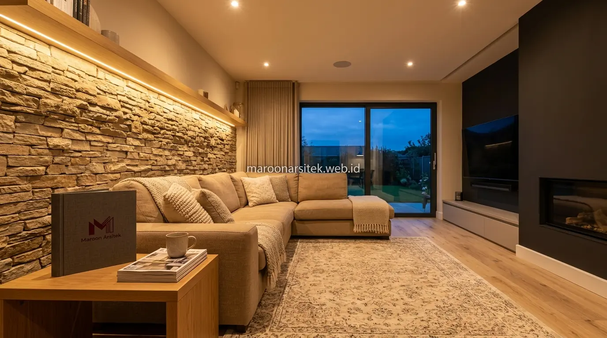

Banyak pemilik rumah menyadari ruangnya terasa kurang hidup namun kesulitan mengidentifikasi penyebabnya, padahal akar masalahnya sering terletak pada penempatan dan jenis pencahayaan yang tidak sesuai fungsi ruang. Bersama layanan jasa desain interior dari Maroon Arsitek, tata lampu dirancang presisi untuk mengubah atmosfer hunian menjadi mewah, hangat, dan berestetika tinggi.
Kombinasi Jenis Pencahayaan untuk Kedalaman Suasana Ruang
Interior rumah modern yang hidup membutuhkan kombinasi beberapa jenis pencahayaan, yaitu pencahayaan umum, pencahayaan tugas, dan pencahayaan aksen, bukan hanya mengandalkan satu sumber lampu utama di tengah ruangan seperti yang umum ditemukan pada rumah dengan desain lama. Kombinasi ini menciptakan kedalaman visual yang membuat ruang terasa lebih dinamis.
Pencahayaan umum berfungsi menerangi ruang secara keseluruhan, sementara pencahayaan tugas ditempatkan pada area spesifik seperti meja kerja atau dapur untuk mendukung aktivitas tertentu. Pencahayaan aksen digunakan untuk menonjolkan elemen desain, seperti dinding bertekstur atau rak pajangan, agar ruang tidak terkesan datar.
Tanpa kombinasi ini, ruang cenderung terasa monoton karena seluruh area mendapat intensitas cahaya yang sama, tanpa ada titik fokus yang menghidupkan karakter desain interior yang telah dirancang secara keseluruhan pada desain interior rumah mewah.
Penempatan Pencahayaan Aksen pada Elemen Desain Utama
Kebutuhan untuk menonjolkan elemen desain tertentu dijawab melalui penempatan pencahayaan aksen yang terarah pada titik seperti dinding bertekstur, karya seni, atau furnitur utama, sehingga elemen tersebut menjadi pusat perhatian dalam ruang.
Penempatan ini membantu menciptakan hierarki visual dalam ruang, di mana mata pengamat diarahkan pada elemen desain yang ingin ditonjolkan, bukan tersebar merata tanpa titik fokus yang jelas.
Pemilihan Suhu Warna Cahaya sesuai Fungsi dan Suasana Ruang
Suhu warna cahaya, baik hangat maupun netral, perlu disesuaikan dengan fungsi ruang agar suasana yang dihasilkan sesuai kebutuhan aktivitas di dalamnya, karena penggunaan suhu warna yang tidak tepat menjadi salah satu penyebab utama ruang terasa suram atau tidak nyaman. Pemilihan ini memengaruhi persepsi keseluruhan terhadap kualitas interior.
- Warm White (2700K – 3000K): Sangat cocok untuk area relaksasi seperti ruang keluarga, kamar tidur, dan ruang makan karena menghadirkan keintiman dan kehangatan.
- Natural White (4000K): Ideal untuk area dapur (*kitchen island*), ruang kerja, dan ruang rias untuk visualisasi warna benda yang akurat tanpa membuat mata lelah.
- Cove & Indirect Light: Pemasangan lampu tersembunyi (*drop ceiling*) memberikan pendaran cahaya lembut yang menaikkan plafon secara visual.

Penyesuaian Suhu Warna Antar Ruang dalam Satu Rumah
Kebutuhan konsistensi suasana antar ruang dijawab melalui penyesuaian suhu warna yang tetap mempertimbangkan transisi antar area, sehingga perpindahan dari satu ruang ke ruang lain tidak terasa kontras secara mendadak akibat perbedaan suhu cahaya yang ekstrem saat menggunakan jasa interior custom.
Penyesuaian ini menciptakan alur suasana yang lebih halus di seluruh rumah, meski setiap ruang tetap memiliki karakter pencahayaan yang disesuaikan dengan fungsinya masing-masing.
Penempatan Titik Lampu yang Menghindari Bayangan Mengganggu
Penempatan titik lampu perlu mempertimbangkan potensi bayangan yang dapat mengganggu aktivitas maupun kesan visual ruang, terutama pada area dengan furnitur besar atau partisi yang berpotensi menghalangi distribusi cahaya secara merata. Perencanaan titik lampu yang tepat mencegah area gelap yang tidak diinginkan dalam ruang.
Perhitungan jarak dan ketinggian titik lampu dilakukan sejak tahap desain interior, bukan ditentukan secara acak setelah furnitur ditempatkan, agar distribusi cahaya benar-benar sesuai dengan tata ruang yang telah direncanakan bersama jasa arsitek rumah kami.
Perhitungan Jarak Titik Lampu Sejak Tahap Desain Interior
Kebutuhan distribusi cahaya yang merata dijawab melalui perhitungan jarak dan ketinggian titik lampu pada tahap perencanaan interior, sebelum furnitur dan partisi ruang ditentukan posisinya secara final.
Perhitungan sejak awal ini mencegah kebutuhan penambahan titik lampu tambahan setelah interior selesai dikerjakan, yang umumnya lebih rumit dan berbiaya lebih tinggi dibanding perencanaan yang matang sejak awal proyek.